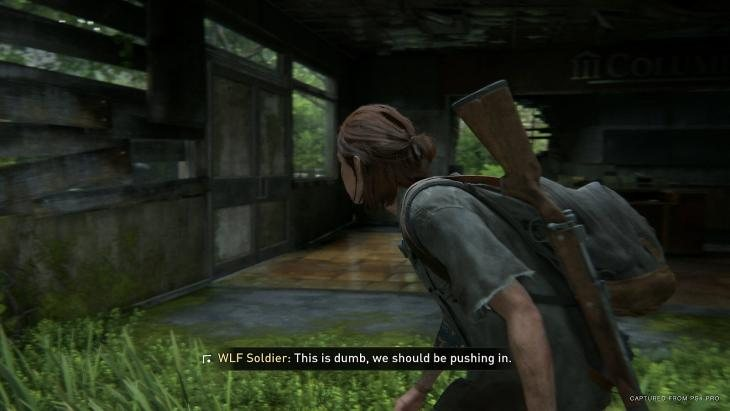
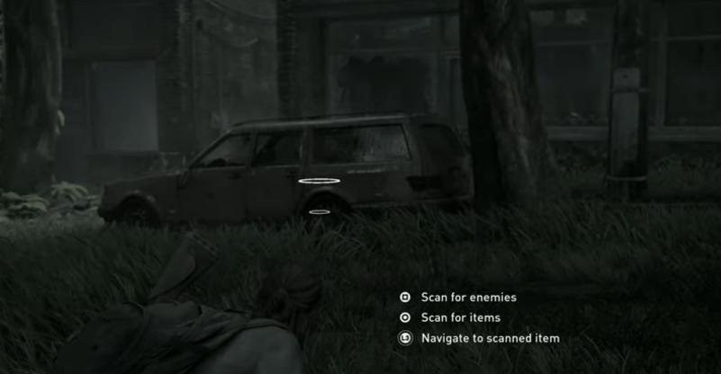
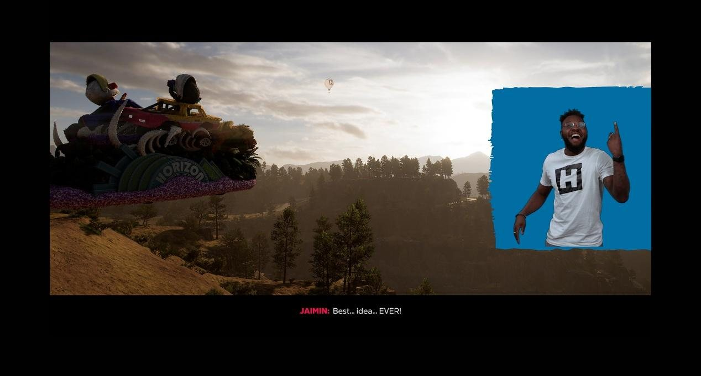

System Analysis · Individual course assignment
First ask what role sound plays in the game, then find a visual or haptic alternative for it.
Sound is an important part of the experience in many games. But for players with hearing impairments, this channel is missing. In many games, this leads to a lack of information, a significant loss of gameplay experience, and a persistent disadvantage in competitive games.
The Last of Us Part II is the industry benchmark for deaf and hard-of-hearing accessibility. Its features are comprehensive, covering nearly every type of audio information with a visual equivalent.

Subtitles are the classic accessibility feature for players with hearing impairments, and The Last of Us Part II offers a high level of customization: players can adjust font size, color and background opacity, and can turn on speaker name labels. The subtitle system also includes an off-screen speaker direction arrow: when a speaking character is outside the frame, an arrow appears next to the subtitle pointing toward the source of the voice. The game also supports subtitles for enemy systemic dialogue during stealth and combat.

In action and stealth games, sound carries a large amount of real-time combat information: the direction of incoming damage, warnings that an enemy is about to spot you, and threats closing in from behind. This information is often too fleeting for subtitles to convey. The game addresses this with a HUD visual system: when the player takes damage, a directional flash appears on the corresponding edge of the screen; when an enemy is about to detect the player during stealth, a directional warning pops up; during combat, markers continuously show the positions of high-threat enemies.
The hearing accessibility design in Forza Horizon 5 focuses on delivering the narrative completely. It uses sign language, the true native language of many deaf players, to convey information. Forcing these players to rely on subtitles is like forcing someone to read in their second language: the content gets through, but the sense of distance never goes away. Sign language performance also carries tone, emotion and context in ways that ordinary subtitles cannot.

The game added picture-in-picture sign language interpretation to all cinematics, in American Sign Language and British Sign Language, performed by actors from the deaf and hard-of-hearing community. Players can choose their preferred sign language in the accessibility settings and freely adjust the position and background color of the interpretation window.
Playground Games brought in consultants from the deaf community early in development and ensured that the actors used natural, fluent ASL and BSL rather than a word-for-word mechanical translation. This reflects an attitude of equality toward deaf players: they deserve to experience the full narrative of a game in their own language.
A Plague Tale: Requiem offers a feature that converts audio into haptic feedback through the controller: an option called "Speech to Vibrations" translates character dialogue into controller vibration. This lets deaf players feel through touch that someone is speaking, sense the rhythm of a conversation, and in some way take part in the pulse of the narrative.
Modern game controllers have increasingly precise haptic feedback, with the PS5 DualSense being a notable example, and haptics are a sensory channel that deaf players can make real use of. If haptic feedback were designed more systematically, with different intensities and rhythms corresponding to different types of audio information, it could become an independent sensory channel rather than just a backup for visual information.
For players with hearing impairments, the core goal of accessibility design is to provide alternative ways of perceiving what hearing normally delivers, primarily through vision and touch.
In my view, doing this well requires designers to first answer one question: what specific role does sound play in my game? Different types of sound serve different roles in a game's systems, and they need different solutions. They can be roughly divided into three categories:
| Type of sound | Its role | Alternatives |
|---|---|---|
| Narrative and dialogue voiceover | Makes narrative content easier to receive and understand; voiceover also adds emotional attitude, tonal variation and character personality that text alone cannot carry. The difference between a character saying something "angrily" and saying the same thing "calmly" may be invisible in text, but immediately clear in audio. | Sign language and controller vibration are both worth exploring, because they can convey emotion itself rather than just content. A lower-cost approach is "more complete subtitles": most games only transcribe spoken content, but with emotional labels such as "[Ellie, furiously]", "[distant, faint sobbing]" or "[background music: tension rising]", deaf players could sense the emotional temperature of a moment through reading, rather than only receiving information. This requires almost no change to game mechanics. |
| Environmental audio in stealth, shooter and adventure games | Tells players about the state of the space beyond their field of view: whether an enemy is approaching, and which direction danger is coming from. This is the category where deaf players are most likely to be at a disadvantage. | Visualization is one way to handle it, but I think haptics have real potential here too. Triggering vibrations in different parts of the controller for threats from different directions would be more intuitive and immersive than layering HUD indicators over the screen; players could sense the direction of a threat through the feel of the controller without diverting any visual attention. |
| Feedback and confirmation sounds | For example, the sound of picking up an item or a hit-confirmation sound in combat. These sounds confirm that the player's action has been registered and communicate the result, such as whether an attack connected. | These can generally be replaced with visual effects such as flashes, particles and floating numbers, or with haptic feedback such as a short vibration on a successful hit. Many games already provide this kind of visual feedback by default; from an accessibility standpoint, though, it is still worth testing whether players who can only rely on visual feedback find it unclear or incomplete. |
Screenshots are from the games discussed and are used for design analysis only.